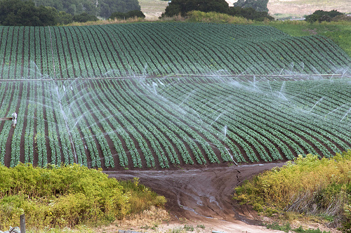

Tehnologia
În statele europene, consumul mediu de îngrășământ activ la hectar este de 200-250 kg, în timp ce în România această medie nici nu trece de 70 kg.
Irigațiile
În prezent (mai 2009), se află în stare de funcționare instalații de irigare pentru 563.000 de hectare de teren agricol, din care 553.000 de hectare (respectiv 99%) sunt contractate de organizațiile utilizatorilor de apă pentru irigații
La capitolul irigații România are un deficit de 2,6 milioane hectare neudate. Pe hârtie, suprafața irigată este de circa 300.000 de hectare, dar faptic sunt doar 100.000 de hectare. Alte surse indică o suprafață de 560.000 hectare irigate.
Înainte de 1989, România avea o rețea de irigații întinsă pe o suprafață de 3,2 milioane hectare, care a fost distrusă aproape în întregime, instalațiile fiind furate sau lăsate în paragină. Majoritatea sistemelor de irigații funcționale în 1989 au fost dezmembrate, iar altele nu prea s-au mai construit.
Conform unor estimări sunt necesare în jur de 14 miliarde euro pentru a pune la punct un sistem de irigații la nivelul celui din 1989, întrucât refacerea sistemului de pe un hectar de teren costă în jur de 7.000 de euro.